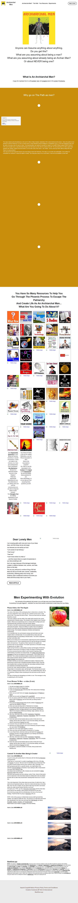

Archiarchal Men on Strikingly
The vision of the future of the world going down in destruction is obsolete. The ones who painted this vision could only see a slanted scenario from a male point of view. This means the best of them... those you have built your spiritual disciplines around.
They were unable to see the shifts in the reality itself caused by the current empowerment of female energy. This showed in their negative view of women leaders. What we are experiencing now is a whole shift of vantage point and empowerment that visionaries of the past couldn’t fathom.
The truth is, the shift in consciousness caused by female empowerment is what saves the planet. Things are shifting so quickly. We are all getting a tutorial in how idiotic and corrupt governing parties are that are devoid of female energy. This includes compassion, kindness and expansive inclusiveness.
It is no accident that I do such dynamic energy work and share such wise insights while in a female body. It is no accident that so many wise and empowered people are incarnating in female bodies. The world is desperate for what I and others offer.
What you are seeing now is consciousness outgrowing the primal conditioning that women are evil. I never understood why Eve was the bad guy for bringing Adam self awareness. The garden of Eden represents the apathy and ignorance that we have tolerated. The Snake represents our Kundalini energy or tapping into our higher Truth.
Right now the Feminine is asking Adam to please eat the Apple of Distinction, the Apple of Discernment, the Apple of Clarity, the Apple of Disillusionment.
Of course everyone becomes naked in each moment of gaining a little understanding of ourselves as energy beings. Our subtle senses Need to be reengaged so that we can expand our consciousness. This is where we are right now. This is what conventional religion created by male dominance has been trying to prevent. But the evolution of consciousness is inevitable. The Bright Principles have already won.
Go back in all that you have been conditioned to believe. Reassess all the demonizing of women that is threaded throughout Western history. See that the corruption that is coming to the head now, was always working to thwart your expansion into female empowerment.
In all you do, think, intend and believe, coax yourself to eat that apple.
Please Adam, for humanity’s sake, eat that apple. The Feminine has so much to offer in creating humanity's future. So do you, the initiated Masculine. We do it in sisterhood, willing to share everything we are and know as with a favorite sister.
The days of besting and subjugating our brother is over. This message is a key to awakening for all of humanity.